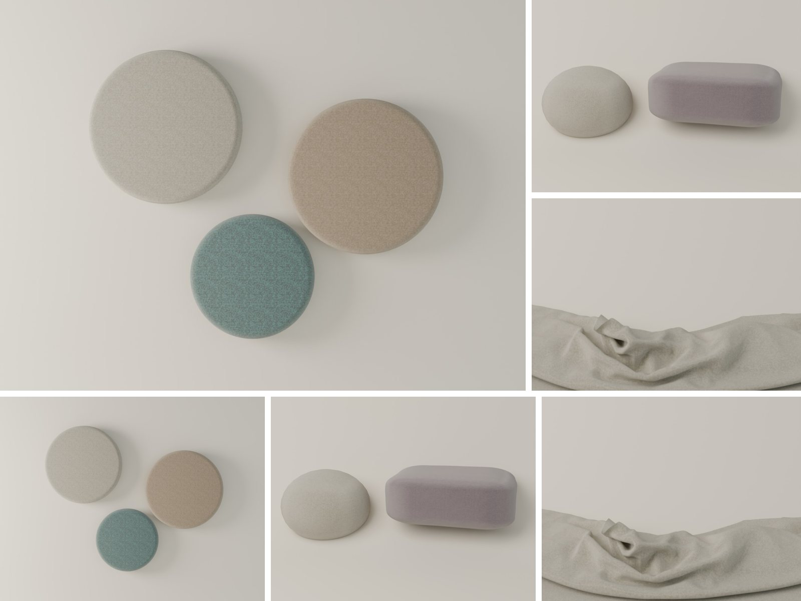
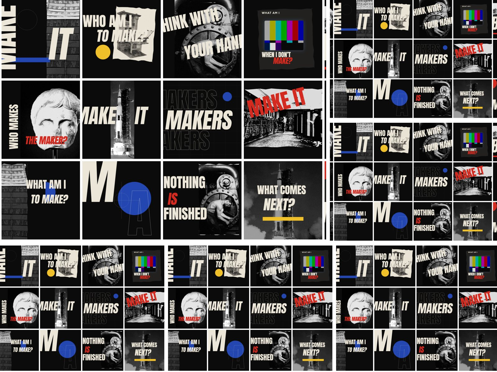
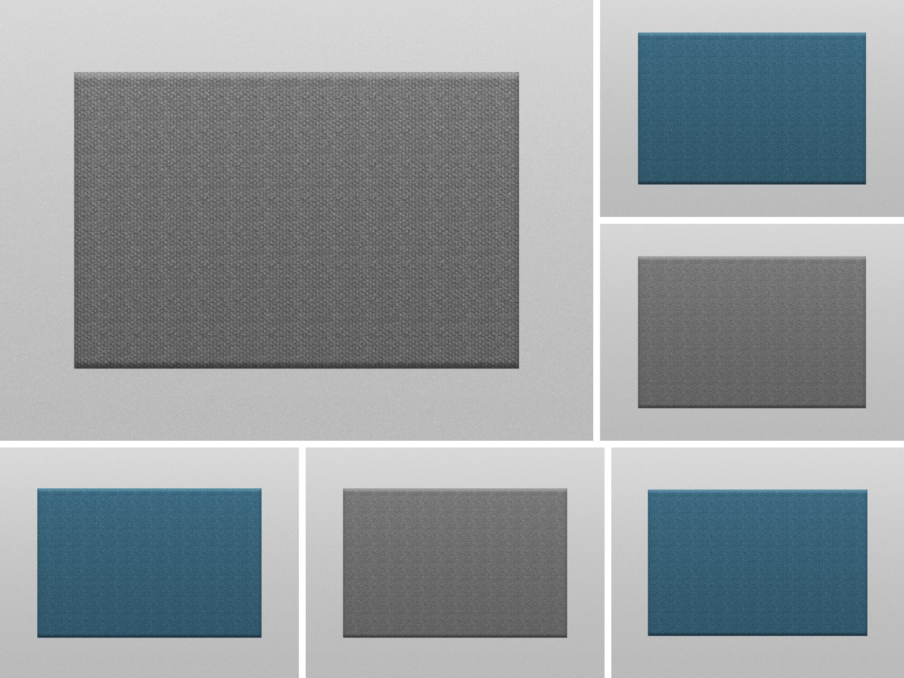

Briefs
Product and material proposals drawn from the themes. Some name a brand they could suit; others stand on their own.
Resoleable trail sneaker Single-material shell jacket
Single-material shell jacket Coastal sun hat
Coastal sun hat Touch knit glove
Touch knit glove Work pant that records wear
Work pant that records wear Sculpted knit dress
Sculpted knit dress One-piece tee with a material record
One-piece tee with a material record Terrain print, color and texture
Terrain print, color and texture One construction, four colorways
One construction, four colorways Life After Scarcity
Life After Scarcity Soft-top board CMF
Soft-top board CMF Architectural evening knit
Architectural evening knit Golf polo that ages well
Golf polo that ages well Second-skin lounge knit
Second-skin lounge knit In-store label capsule
In-store label capsule
Single-material shell jacketCoastal sun hatTouch knit gloveWork pant that records wearSculpted knit dressOne-piece tee with a material recordTerrain print, color and textureOne construction, four colorways
Restorative cabin textile
Makers, a kinetic posterLife After ScarcitySoft-top board CMFArchitectural evening knitGolf polo that ages well
Pattern for interior partsSecond-skin lounge knitIn-store label capsule